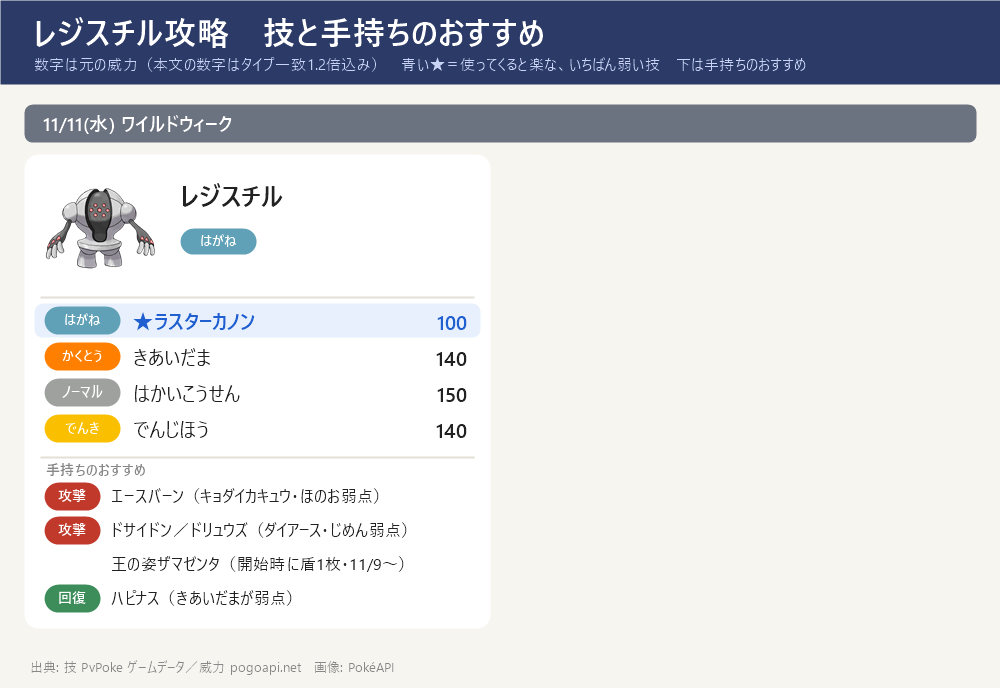
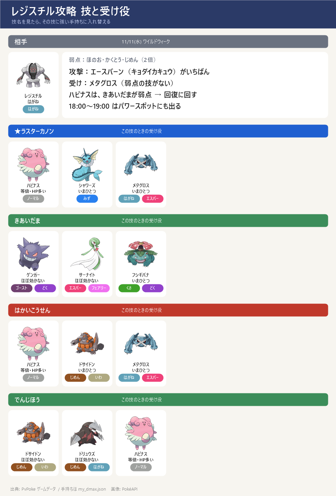

ダイマックス レジスチル 攻略（11/11 水）
ダイマックス レジスチル 攻略（11/11 水）- ワイルドウィーク 11/11(水) の★5 マックスバトル。ダイマックス レジスチル（はがね）。HPは約18,000・防御がとても高い（みんポケ）。18:00～19:00 はパワースポットにも出る
- 弱点：ほのお・かくとう・じめん（2倍）。攻撃役はキョダイマックスのエースバーンが手持ちでいちばん、次がカイリキー、じめんのドサイドン（ダイアースLv2）・ドリュウズ（ダイアースLv1）も弱点を突ける
- 受け役の定番はハピナスと王の姿ザマゼンタ（たてのおう）。ザマゼンタはバトル開始時に盾を1枚持った状態で始まる（11/9〜のレイドで手持ちに加わる予定）
- ねらい目の技：ラスターカノン。いちばん危ないのは はかいこうせん（150）。技の威力そのものが高く大きなダメージになるので、どのパターンも油断できない
- 人数の目安は4人（手持ちがよく育っていれば3人）。ダイキノコを使っても全滅のおそれがあるので、確実にいくなら最低3人（下の『何人なら勝てる？』）
- この期間に捕まえると、通常技メタルクローを覚えている。色違いあり
技カード

スペシャルアタック候補とねらい目

- ★ ラスターカノン（はがね）威力 120 ← ねらい目（いちばん弱い）
- きあいだま（かくとう）威力 140
- はかいこうせん（ノーマル）威力 150 ← いちばん危ない
- でんじほう（でんき）威力 140
- 技は選べない。最初の大技の名前を見て、受け役を合わせる
ボスの攻撃のルール
- 1回のバトルで使う技は2つだけ：このボスのゲージ技（ラスターカノン・きあいだま・はかいこうせん・でんじほう）から2つが抽選され、片方が『単体攻撃（スペシャル技）』・もう片方が『全体攻撃』に決まる。バトルの間はこの割り当てのまま変わらない
- 単体攻撃（スペシャル技）：ねらわれた1体の頭の上に3本線（黄色い光）が出て約1秒後に当たる。左右にスワイプで避けられる（ギリギリで避けるほど軽い：すぐ約5割減・点滅直前で約7割減）
- 全体攻撃：「○○の全体攻撃！」の予告の帯が出て場の全員に当たる。避けられない → ダイウォールを張るか、その技に強い受け役に交代する
- 見分け方：出た技が『頭上の3本線』なら単体、『○○の全体攻撃！』の帯なら全体。最初の1〜2回でどの技がどちらかが分かる。来た技名に合わせて受け役を置く → 下の『パターンの早見表』『パターン別の作戦』を見る
- 負けてもマックス粒子（MP）は減らない → 組み合わせが悪ければ気にせず入り直してよい（入り直すと組み合わせは変わることがある）
- ルールの出典：ポケモンWiki「マックスバトル」＋みんポケ「回避のしかた」で一致（実際に戦った感覚とも一致）
交代受けのコツ
- ボスの技は単体攻撃（スペシャル技）と全体攻撃の2種類で、守り方がちがう。単体は交代で受けず回避・全体だけ予告を見て交代で受ける
- 単体攻撃（スペシャル技）＝交代せずスワイプで回避：ねらわれた1体の頭の上に3本線（黄色い光）が出て約1秒後に当たる → すぐ横にスワイプして避ける。交代は間に合わないので、単体攻撃を交代で受け役に回すことはしない（先頭はそのまま避ける）
- 全体攻撃＝予告を見てから受け役に交代：バトル開始時・ボスの技の直後・ダイマックス解除時に「○○の全体攻撃！」の予告の帯が出る → 予告を見てから、その技に強い受け役に交代して受け、受けたら先頭に戻す（避けられないのでダイウォールを張ってもよい）
前回の定番攻略（2026年5月ごろの開催より）
- 前回（2026年5月ごろ）の開催で出そろった定番をもとに作り直し（出典：攻略大百科・みんポケ・ゲームウィズ・ポケらく・くろさんのねごと）
- HPは約18,000・防御がとても高い（みんポケ）。技の威力そのものが高く、大きなダメージになる（ゲームウィズ）→ どの技が全体でも油断できない（以前の『どのパターンも楽』という書き方は直した）
- 受け役の定番：ハピナス＋王の姿ザマゼンタ（たてのおう）。ザマゼンタはバトル開始時に盾を1枚持った状態で始まる（攻略大百科・みんポケ）
- 攻撃役の定番：キョダイマックスのエースバーン・王の姿ザシアン（けんのおう）（ゲームウィズ・くろさんのねごと）。手持ちでは下の『攻撃役の1発ダメージ』のとおり、じめんのドサイドン・ドリュウズも弱点を突ける
- 技がきついとき（はずれの組み合わせ）は入り直す（負けてもマックス粒子は減らない）
- 【王の姿ザマゼンタのマックスバトルでの使い方】（2サイト以上で確認）：ダイマックスできる（攻略大百科・みんポケ）。タイプはかくとう・はがねで、レジスチルのラスターカノンはほぼ効かず・はかいこうせん／でんじほうもいまひとつ（等倍で通るのは きあいだま だけ）→ 盾の軸に最適。通常技はメタルクロー（みんポケ・くろさん）。『2回目以降はエネルギー消費なしで姿を切り替えられる』はみんポケ1サイトのみ・未確認。特別なフィールド効果の記載は見当たらなかった
サイトで違っていた点
- 最少人数の目安がサイトで違う：攻略大百科は『TL60以上なら3人／TL50以上なら4人・最少2人』、くろさんのねごとは『4人が基本・育っていれば3人』、みんポケは『2〜4人、またはソロ（わざ厳選）』 → このページは安全側で『基本4人・よく育てば3人・ダイキノコ推奨』を採用
- 王の姿ザマゼンタが開始時に盾を1枚持つ点は、みんポケ・攻略大百科で確認（ゲームウィズ・くろさんのねごとには明記なし）
- 『ザマゼンタは2回目以降エネルギー消費なしで姿を切り替えられる』はみんポケ1サイトのみ・未確認
出陣する3体
出陣する3体：エースバーン（攻撃）・メタグロス（受け）・フシギバナ（受け）。連れて行けるのは1人3体まで。下の『パターン別の作戦』の受け1・受け2・攻撃はこの3体の中で選ぶ
レジスチルはメタグロスがラスターカノン・はかいこうせんを、フシギバナがきあいだま・でんじほうを、それぞれいまひとつで受けられる → 2体で4つの技すべてをいまひとつ以下で受けられ、全12パターンで先頭も交代先もそろう（2体とも弱点になる技がない）
攻撃はキョダイマックスのエースバーン（ほのお弱点）が1発いちばん大きい。じめんのドサイドン／ドリュウズも弱点を突けるので、攻撃役を増やしたいときはフシギバナと入れ替えてもよい（ただし受けの穴が増える）
11/9以降の3体（王の姿ザマゼンタ加入後）：エースバーン（攻撃）・ザマゼンタ(王)（受け）・フシギバナ（受け）。連れて行けるのは1人3体まで。下の『パターン別の作戦』の受け1・受け2・攻撃はこの3体の中で選ぶ
王の姿ザマゼンタが入ったらメタグロスの代わりに（ラスターカノンほぼ無効・はかいこうせんいまひとつ＋開始時に盾1枚）。きあいだまだけ弱点だが、そのときはフシギバナが受けられるので穴がない
パターンの早見表
どのパターンでも、まず弱点のない受け役で受けて技を確認 → 下のとおり入れ替える。評価は避けられない『全体攻撃』で決める：技の威力そのものが高い（150以上）か、相性の良い受け役でも大きく削られる（目安70以上）と『はずれ』、威力が低め（100以下）で相性の良い受け役なら軽い（目安50以下）と『当たり』、その間が『ふつう』。全技が高威力のボスでは『当たり』は出ない（単体攻撃はスワイプで避けられるので評価に入れない）
| # | 単体 3本線・避ける | 全体 予告・避けられない | 全体の 威力 | 評価 | 全体の受け役 |
|---|---|---|---|---|---|
| 1 | きあいだま | でんじほう | 140 | ふつう | フシギバナ |
| 2 | でんじほう | きあいだま | 140 | ふつう | ゲンガー |
| 3 | はかいこうせん | きあいだま | 140 | ふつう | ゲンガー |
| 4 | はかいこうせん | でんじほう | 140 | ふつう | ドサイドン |
| 5 | ラスターカノン | きあいだま | 140 | ふつう | ゲンガー |
| 6 | ラスターカノン | でんじほう | 140 | ふつう | ドリュウズ |
| 7 | きあいだま | はかいこうせん | 150 | はずれ | ゲンガー |
| 8 | でんじほう | はかいこうせん | 150 | はずれ | ゲンガー |
| 9 | ラスターカノン | はかいこうせん | 150 | はずれ | ゲンガー |
| 10 | きあいだま | ラスターカノン | 120 | はずれ | メタグロス |
| 11 | でんじほう | ラスターカノン | 120 | はずれ | ザマゼンタ(王) 開始時に盾1枚 |
| 12 | はかいこうせん | ラスターカノン | 120 | はずれ | ザマゼンタ(王) 開始時に盾1枚 |
数字＝全体攻撃1発の目安（威力×相性・タイプ一致1.2倍込み）。『全体の威力』は技そのものの威力。評価＝威力150以上か目安70以上→はずれ／威力100以下かつ目安50以下→当たり／その間→ふつう。手持ち・個体値・技レベルは my_dmax.json より
パターン別の作戦
受け2体＋攻撃1体が基本。各パターンで上の『出陣する3体』の中から 受け1（基本の先頭・スペシャル技をスワイプで回避しつつ受ける）／受け2（全体攻撃の予告で交代。攻撃役が全体を半減以下で受けられるなら攻撃役に交代／受け1のままでよいなら交代不要）／攻撃（ダイマックスのとき交代）を選ぶ。スペシャル技は交代で受けず回避し、全体攻撃だけ交代で受ける（当たり→ふつう→はずれ の順）
パターン1 単体=きあいだま／全体=でんじほう ［ふつう］
評価：ふつう — 受け役を合わせれば対応できる組み合わせ。ただし全体攻撃はそれなりに重いので、盾・交代をサボらない
この組み合わせは 単体＝きあいだま（頭上に3本線・スワイプで回避）と 全体＝でんじほう（「でんじほうの全体攻撃！」の予告・避けられない）。受け2体＋攻撃1体でこう動く：
受け1（基本の先頭）＝フシギバナ：スペシャル技〔きあいだま〕をいまひとつ（1発88）で受けられる。スペシャル技は交代で受けられないので先頭に置き、3本線が出たらスワイプで回避しつつ通常技でゲージをためる
受け2（全体攻撃の予告で交代）＝交代不要（受け1のままでよい）：受け1が全体攻撃〔でんじほう〕もいまひとつで受けられるので、交代せずそのまま受けてよい（不安ならダイウォールで固める）
攻撃（ダイマックスのとき交代）＝エースバーン：ほのお技でボスの弱点を突ける（1発278）。ダイマックスがたまったら交代して弱点を突く
見分け方：最初に頭上の3本線できあいだま、予告の帯ででんじほうが来たらこのパターン
パターン2 単体=でんじほう／全体=きあいだま ［ふつう］
評価：ふつう — 受け役を合わせれば対応できる組み合わせ。ただし全体攻撃はそれなりに重いので、盾・交代をサボらない
この組み合わせは 単体＝でんじほう（頭上に3本線・スワイプで回避）と 全体＝きあいだま（「きあいだまの全体攻撃！」の予告・避けられない）。受け2体＋攻撃1体でこう動く：
受け1（基本の先頭）＝フシギバナ：スペシャル技〔でんじほう〕をいまひとつ（1発88）で受けられる。スペシャル技は交代で受けられないので先頭に置き、3本線が出たらスワイプで回避しつつ通常技でゲージをためる
受け2（全体攻撃の予告で交代）＝交代不要（受け1のままでよい）：受け1が全体攻撃〔きあいだま〕もいまひとつで受けられるので、交代せずそのまま受けてよい（不安ならダイウォールで固める）
攻撃（ダイマックスのとき交代）＝エースバーン：ほのお技でボスの弱点を突ける（1発278）。ダイマックスがたまったら交代して弱点を突く
見分け方：最初に頭上の3本線ででんじほう、予告の帯できあいだまが来たらこのパターン
パターン3 単体=はかいこうせん／全体=きあいだま ［ふつう］
評価：ふつう — 受け役を合わせれば対応できる組み合わせ。ただし全体攻撃はそれなりに重いので、盾・交代をサボらない
この組み合わせは 単体＝はかいこうせん（頭上に3本線・スワイプで回避）と 全体＝きあいだま（「きあいだまの全体攻撃！」の予告・避けられない）。受け2体＋攻撃1体でこう動く：
受け1（基本の先頭）＝メタグロス：スペシャル技〔はかいこうせん〕をいまひとつ（1発94）で受けられる。スペシャル技は交代で受けられないので先頭に置き、3本線が出たらスワイプで回避しつつ通常技でゲージをためる
受け2（全体攻撃の予告で交代）＝フシギバナ：全体攻撃〔きあいだま〕を3体でいちばん軽いいまひとつ（1発88）で受けられる → 予告が出たら交代して受け、受けたら受け1に戻す。この受け役はダイウォールを持たないので、盾を張るなら メタグロス（ダイウォール Lv2）
攻撃（ダイマックスのとき交代）＝エースバーン：ほのお技でボスの弱点を突ける（1発278）。ダイマックスがたまったら交代して弱点を突く
見分け方：最初に頭上の3本線ではかいこうせん、予告の帯できあいだまが来たらこのパターン
パターン4 単体=はかいこうせん／全体=でんじほう ［ふつう］
評価：ふつう — 受け役を合わせれば対応できる組み合わせ。ただし全体攻撃はそれなりに重いので、盾・交代をサボらない
この組み合わせは 単体＝はかいこうせん（頭上に3本線・スワイプで回避）と 全体＝でんじほう（「でんじほうの全体攻撃！」の予告・避けられない）。受け2体＋攻撃1体でこう動く：
受け1（基本の先頭）＝メタグロス：スペシャル技〔はかいこうせん〕をいまひとつ（1発94）で受けられる。スペシャル技は交代で受けられないので先頭に置き、3本線が出たらスワイプで回避しつつ通常技でゲージをためる
受け2（全体攻撃の予告で交代）＝フシギバナ：全体攻撃〔でんじほう〕を3体でいちばん軽いいまひとつ（1発88）で受けられる → 予告が出たら交代して受け、受けたら受け1に戻す。この受け役はダイウォールを持たないので、盾を張るなら メタグロス（ダイウォール Lv2）
攻撃（ダイマックスのとき交代）＝エースバーン：ほのお技でボスの弱点を突ける（1発278）。ダイマックスがたまったら交代して弱点を突く
見分け方：最初に頭上の3本線ではかいこうせん、予告の帯ででんじほうが来たらこのパターン
パターン5 単体=ラスターカノン／全体=きあいだま ［ふつう］
評価：ふつう — 受け役を合わせれば対応できる組み合わせ。ただし全体攻撃はそれなりに重いので、盾・交代をサボらない
この組み合わせは 単体＝ラスターカノン（頭上に3本線・スワイプで回避）と 全体＝きあいだま（「きあいだまの全体攻撃！」の予告・避けられない）。受け2体＋攻撃1体でこう動く：
受け1（基本の先頭）＝エースバーン：スペシャル技〔ラスターカノン〕をいまひとつ（1発75）で受けられる。スペシャル技は交代で受けられないので先頭に置き、3本線が出たらスワイプで回避しつつ通常技でゲージをためる
受け2（全体攻撃の予告で交代）＝フシギバナ：全体攻撃〔きあいだま〕を3体でいちばん軽いいまひとつ（1発88）で受けられる → 予告が出たら交代して受け、受けたら受け1に戻す。この受け役はダイウォールを持たないので、盾を張るなら メタグロス（ダイウォール Lv2）
攻撃（ダイマックスのとき交代）＝エースバーン（受け1と兼任）：ほのお技でボスの弱点を突ける（1発278）。ダイマックスがたまったら交代して弱点を突く
見分け方：最初に頭上の3本線でラスターカノン、予告の帯できあいだまが来たらこのパターン
パターン6 単体=ラスターカノン／全体=でんじほう ［ふつう］
評価：ふつう — 受け役を合わせれば対応できる組み合わせ。ただし全体攻撃はそれなりに重いので、盾・交代をサボらない
この組み合わせは 単体＝ラスターカノン（頭上に3本線・スワイプで回避）と 全体＝でんじほう（「でんじほうの全体攻撃！」の予告・避けられない）。受け2体＋攻撃1体でこう動く：
受け1（基本の先頭）＝エースバーン：スペシャル技〔ラスターカノン〕をいまひとつ（1発75）で受けられる。スペシャル技は交代で受けられないので先頭に置き、3本線が出たらスワイプで回避しつつ通常技でゲージをためる
受け2（全体攻撃の予告で交代）＝フシギバナ：全体攻撃〔でんじほう〕を3体でいちばん軽いいまひとつ（1発88）で受けられる → 予告が出たら交代して受け、受けたら受け1に戻す。この受け役はダイウォールを持たないので、盾を張るなら メタグロス（ダイウォール Lv2）
攻撃（ダイマックスのとき交代）＝エースバーン（受け1と兼任）：ほのお技でボスの弱点を突ける（1発278）。ダイマックスがたまったら交代して弱点を突く
見分け方：最初に頭上の3本線でラスターカノン、予告の帯ででんじほうが来たらこのパターン
パターン7 単体=きあいだま／全体=はかいこうせん ［はずれ］
評価：はずれ — 避けられない全体攻撃の威力が高い組み合わせ。入り直して別の組み合わせを狙うのがおすすめ
この組み合わせは 単体＝きあいだま（頭上に3本線・スワイプで回避）と 全体＝はかいこうせん（「はかいこうせんの全体攻撃！」の予告・避けられない）。受け2体＋攻撃1体でこう動く：
受け1（基本の先頭）＝フシギバナ：スペシャル技〔きあいだま〕をいまひとつ（1発88）で受けられる。スペシャル技は交代で受けられないので先頭に置き、3本線が出たらスワイプで回避しつつ通常技でゲージをためる
受け2（全体攻撃の予告で交代）＝メタグロス：全体攻撃〔はかいこうせん〕を3体でいちばん軽いいまひとつ（1発94）で受けられる → 予告が出たら交代して受け、受けたら受け1に戻す。この受け役はダイウォールも張れる
攻撃（ダイマックスのとき交代）＝エースバーン：ほのお技でボスの弱点を突ける（1発278）。ダイマックスがたまったら交代して弱点を突く
見分け方：最初に頭上の3本線できあいだま、予告の帯ではかいこうせんが来たらこのパターン。全体攻撃の威力が高いので、入り直して別の組み合わせを狙うのも手
パターン8 単体=でんじほう／全体=はかいこうせん ［はずれ］
評価：はずれ — 避けられない全体攻撃の威力が高い組み合わせ。入り直して別の組み合わせを狙うのがおすすめ
この組み合わせは 単体＝でんじほう（頭上に3本線・スワイプで回避）と 全体＝はかいこうせん（「はかいこうせんの全体攻撃！」の予告・避けられない）。受け2体＋攻撃1体でこう動く：
受け1（基本の先頭）＝フシギバナ：スペシャル技〔でんじほう〕をいまひとつ（1発88）で受けられる。スペシャル技は交代で受けられないので先頭に置き、3本線が出たらスワイプで回避しつつ通常技でゲージをためる
受け2（全体攻撃の予告で交代）＝メタグロス：全体攻撃〔はかいこうせん〕を3体でいちばん軽いいまひとつ（1発94）で受けられる → 予告が出たら交代して受け、受けたら受け1に戻す。この受け役はダイウォールも張れる
攻撃（ダイマックスのとき交代）＝エースバーン：ほのお技でボスの弱点を突ける（1発278）。ダイマックスがたまったら交代して弱点を突く
見分け方：最初に頭上の3本線ででんじほう、予告の帯ではかいこうせんが来たらこのパターン。全体攻撃の威力が高いので、入り直して別の組み合わせを狙うのも手
パターン9 単体=ラスターカノン／全体=はかいこうせん ［はずれ］
評価：はずれ — 避けられない全体攻撃の威力が高い組み合わせ。入り直して別の組み合わせを狙うのがおすすめ
この組み合わせは 単体＝ラスターカノン（頭上に3本線・スワイプで回避）と 全体＝はかいこうせん（「はかいこうせんの全体攻撃！」の予告・避けられない）。受け2体＋攻撃1体でこう動く：
受け1（基本の先頭）＝エースバーン：スペシャル技〔ラスターカノン〕をいまひとつ（1発75）で受けられる。スペシャル技は交代で受けられないので先頭に置き、3本線が出たらスワイプで回避しつつ通常技でゲージをためる
受け2（全体攻撃の予告で交代）＝メタグロス：全体攻撃〔はかいこうせん〕を3体でいちばん軽いいまひとつ（1発94）で受けられる → 予告が出たら交代して受け、受けたら受け1に戻す。この受け役はダイウォールも張れる
攻撃（ダイマックスのとき交代）＝エースバーン（受け1と兼任）：ほのお技でボスの弱点を突ける（1発278）。ダイマックスがたまったら交代して弱点を突く
見分け方：最初に頭上の3本線でラスターカノン、予告の帯ではかいこうせんが来たらこのパターン。全体攻撃の威力が高いので、入り直して別の組み合わせを狙うのも手
パターン10 単体=きあいだま／全体=ラスターカノン ［はずれ］
評価：はずれ — 避けられない全体攻撃の威力が高い組み合わせ。入り直して別の組み合わせを狙うのがおすすめ
この組み合わせは 単体＝きあいだま（頭上に3本線・スワイプで回避）と 全体＝ラスターカノン（「ラスターカノンの全体攻撃！」の予告・避けられない）。受け2体＋攻撃1体でこう動く：
受け1（基本の先頭）＝フシギバナ：スペシャル技〔きあいだま〕をいまひとつ（1発88）で受けられる。スペシャル技は交代で受けられないので先頭に置き、3本線が出たらスワイプで回避しつつ通常技でゲージをためる
受け2（全体攻撃の予告で交代）＝攻撃役〔エースバーン〕に交代：攻撃役が全体攻撃〔ラスターカノン〕をいまひとつ（1発75）で受けられる → 全体攻撃の予告が出たら攻撃役に交代して受け、受けたら受け1に戻す
攻撃（ダイマックスのとき交代）＝エースバーン：ほのお技でボスの弱点を突ける（1発278）。ダイマックスがたまったら交代して弱点を突く
見分け方：最初に頭上の3本線できあいだま、予告の帯でラスターカノンが来たらこのパターン。全体攻撃の威力が高いので、入り直して別の組み合わせを狙うのも手
パターン11 単体=でんじほう／全体=ラスターカノン ［はずれ］
評価：はずれ — 避けられない全体攻撃の威力が高い組み合わせ。入り直して別の組み合わせを狙うのがおすすめ
この組み合わせは 単体＝でんじほう（頭上に3本線・スワイプで回避）と 全体＝ラスターカノン（「ラスターカノンの全体攻撃！」の予告・避けられない）。受け2体＋攻撃1体でこう動く：
受け1（基本の先頭）＝フシギバナ：スペシャル技〔でんじほう〕をいまひとつ（1発88）で受けられる。スペシャル技は交代で受けられないので先頭に置き、3本線が出たらスワイプで回避しつつ通常技でゲージをためる
受け2（全体攻撃の予告で交代）＝攻撃役〔エースバーン〕に交代：攻撃役が全体攻撃〔ラスターカノン〕をいまひとつ（1発75）で受けられる → 全体攻撃の予告が出たら攻撃役に交代して受け、受けたら受け1に戻す
攻撃（ダイマックスのとき交代）＝エースバーン：ほのお技でボスの弱点を突ける（1発278）。ダイマックスがたまったら交代して弱点を突く
見分け方：最初に頭上の3本線ででんじほう、予告の帯でラスターカノンが来たらこのパターン。全体攻撃の威力が高いので、入り直して別の組み合わせを狙うのも手
パターン12 単体=はかいこうせん／全体=ラスターカノン ［はずれ］
評価：はずれ — 避けられない全体攻撃の威力が高い組み合わせ。入り直して別の組み合わせを狙うのがおすすめ
この組み合わせは 単体＝はかいこうせん（頭上に3本線・スワイプで回避）と 全体＝ラスターカノン（「ラスターカノンの全体攻撃！」の予告・避けられない）。受け2体＋攻撃1体でこう動く：
受け1（基本の先頭）＝メタグロス：スペシャル技〔はかいこうせん〕をいまひとつ（1発94）で受けられる。スペシャル技は交代で受けられないので先頭に置き、3本線が出たらスワイプで回避しつつ通常技でゲージをためる
受け2（全体攻撃の予告で交代）＝交代不要（受け1のままでよい）：受け1が全体攻撃〔ラスターカノン〕もいまひとつで受けられるので、交代せずそのまま受けてよい（不安ならダイウォールで固める）
攻撃（ダイマックスのとき交代）＝エースバーン：ほのお技でボスの弱点を突ける（1発278）。ダイマックスがたまったら交代して弱点を突く
見分け方：最初に頭上の3本線ではかいこうせん、予告の帯でラスターカノンが来たらこのパターン。全体攻撃の威力が高いので、入り直して別の組み合わせを狙うのも手
何人なら勝てる？（人数の目安）
- 前提：HP 約18,000（みんポケ）。下の『攻撃役の1発ダメージ』を使い、通常技は5分の7割連打・ダイマックスは1人約2回×3発でざっくり計算（ゲージ技・応援は未計上＝少し控えめ）。ディアルガのページと同じ考え方
- ダイ技1発：エースバーン 278（キョダイ・ほのお弱点）／ドサイドン 205（ダイアースLv2・じめん弱点）／ドリュウズ 152（ダイアースLv1）／カイリキー 139（ダイナックル）
- 1人が5分で削る量（通常技＋ダイ技2回×3発）：およそ 3,000〜3,700（ドサイドンのどろかけが速くてよく削れる）
- 4人（全員攻撃）：合計 約13,000〜14,000（ダイキノコなし）→ HP18,000に届かず暴走のおそれ。ダイキノコ（ダイ技2倍）を使うと約18,000で5分ちょうど → 4人でもダイキノコ推奨
- 3人：キョダイ・ダイアースLv3までよく育てた攻撃役＋ダイキノコ＋ゲージ技・応援で約13,000〜15,000 → ぎりぎり届かないことも。確実にいくなら最低3人、基本は4人（攻略大百科・くろさんのねごと：ダイキノコを使っても全滅のおそれ）
- 守り：王の姿ザマゼンタ（開始時に盾1枚）とハピナスで受けを固め、暴走寸前（約4分30秒）が出たら盾・回復をやめてダイ攻撃だけにする
手持ちが受けるダメージ
- ハピナス：ラスターカノン 120 ／ きあいだま 224（弱点） ／ はかいこうせん 150 ／ でんじほう 140
- ザマゼンタ(王)（王の姿・11/9〜 加入予定）：ラスターカノン 75（いまひとつ） ／ きあいだま 224（弱点） ／ はかいこうせん 94（いまひとつ） ／ でんじほう 140
- メタグロス：ラスターカノン 75（いまひとつ） ／ きあいだま 140 ／ はかいこうせん 94（いまひとつ） ／ でんじほう 140
- ドサイドン：ラスターカノン 192（弱点） ／ きあいだま 224（弱点） ／ はかいこうせん 94（いまひとつ） ／ でんじほう 55（ほぼ効かない）
- フシギバナ：ラスターカノン 120 ／ きあいだま 88（いまひとつ） ／ はかいこうせん 150 ／ でんじほう 88（いまひとつ）
- シャワーズ（預け中・CP未確認）：ラスターカノン 75（いまひとつ） ／ きあいだま 140 ／ はかいこうせん 150 ／ でんじほう 224（弱点）
- ドリュウズ：ラスターカノン 75（いまひとつ） ／ きあいだま 224（弱点） ／ はかいこうせん 94（いまひとつ） ／ でんじほう 55（ほぼ効かない）
- ゲンガー：ラスターカノン 120 ／ きあいだま 34（ほぼ効かない） ／ はかいこうせん 59（ほぼ効かない） ／ でんじほう 140
- エースバーン：ラスターカノン 75（いまひとつ） ／ きあいだま 140 ／ はかいこうせん 150 ／ でんじほう 140
- サーナイト：ラスターカノン 192（弱点） ／ きあいだま 55（ほぼ効かない） ／ はかいこうせん 150 ／ でんじほう 140
- カイリキー：ラスターカノン 120 ／ きあいだま 140 ／ はかいこうせん 150 ／ でんじほう 140
- インテレオン：ラスターカノン 75（いまひとつ） ／ きあいだま 140 ／ はかいこうせん 150 ／ でんじほう 224（弱点）
- 数字＝技の威力 × 相性（ボスと同じタイプの技は1.2倍）。並びは受けやすい順（防御とHPも計算に入れた）
攻撃役の1発ダメージ
- 前提：相手の防御の補正 0.85（ディアルガ・パルキアのページと同じ）。個体値15/15/15として CP からレベルを逆算。ボスのHPはどのサイトにも未掲載なので、何回で倒せるかは出していない → 手持ち同士の比べ合い用
- 1発のダメージ（今の技レベル → Lv3 にしたとき）
- ● エースバーン（ダイバーン・弱点）：1発 278 ／ Lv3：313
- ● ドサイドン（ダイアース・弱点）：1発 205 ／ Lv3：240
- ゲンガー（ダイホロウ・等倍）：1発 168（Lv3 済み）
- ● ドリュウズ（ダイアース・弱点）：1発 152 ／ Lv3：212
- ● カイリキー（ダイナックル・弱点）：1発 139 ／ Lv3：194
- シャワーズ（ダイストリーム・等倍）：1発 123 ／ Lv3：144 ※CP不明のため Lv40・100% と仮定
- インテレオン（ダイストリーム・等倍）：1発 114 ／ Lv3：160
並びと動き方
- 王の姿ザマゼンタ（たてのおう・かくとう/はがね）：ラスターカノンはほぼ効かない、はかいこうせん・でんじほうもいまひとつ（等倍で通るのは きあいだま だけ）。開始時に盾を1枚持つので最初の受け役に最適（11/9〜加入予定）
- メタグロス：ラスターカノン・はかいこうせんをいまひとつで受け、きあいだま・でんじほうも等倍 → 弱点がないので、ザマゼンタが入るまでの受け役の軸
- ハピナス：HPは多いがきあいだまが弱点（224） → 技名がきあいだまなら下げて、回復に専念
- ゲンガー：きあいだま・はかいこうせんがほぼ効かない。技名がこの2つならゲンガーを前に出すのもあり（HPが少ないのでラスターカノン・でんじほうでは出さない）
- ドサイドン・ドリュウズ：でんじほうはほぼ効かない。どろかけ→ダイアースでじめんの弱点を突ける攻撃役（ドサイドンは Lv2 済み）。ラスターカノン・きあいだまが弱点なので、その技のときは攻撃だけして受けはザマゼンタ／メタグロスに任せる
- 出さない：シャワーズ・インテレオン（でんじほうが弱点）
戦い方のコツ
- 出陣させる3体：エースバーン・メタグロス・フシギバナ（エースバーン＝攻撃・キョダイカキュウ／メタグロス＝受け・盾軸（ラスターカノン/はかいこうせん）／フシギバナ＝受け・でんじほう/きあいだまを半減）。マックスバトルに連れて行けるのは1人3体まで。下の入れ替えはこの3体の中で行う
- 最初の受け役はメタグロス：ボスの技（狙い撃ち・全体攻撃）は1回使われるまで分からない（ほかの人に当たっても技名は出る）→ 技名が分かるまではメタグロスで受ける（ラスターカノン・はかいこうせんをいまひとつで受けられ、弱点になる技がない）。分かったら下のとおり入れ替える
- ラスターカノンなら → 盾はそのままメタグロス（いまひとつ）。攻撃はエースバーン・メタグロスでいく
- きあいだまなら → 盾をフシギバナに替える（いまひとつ）。攻撃はエースバーン・メタグロスでいく
- はかいこうせんなら → 盾はそのままメタグロス（いまひとつ）。攻撃はエースバーン・メタグロスでいく
- でんじほうなら → 盾をフシギバナに替える（いまひとつ）。攻撃はエースバーン・メタグロスでいく
- 野良では抜けずに受け役を入れ替える：ボスの技（狙い撃ち1つ＋全体攻撃1つ）は挑戦ごとに抽選されるが、途中で抜けると残りの3人が不利になる → 技名を見て、その技に強い手持ちに替える。入り直し（MP は勝ったときだけ減る）は知り合いと組んで、全員で決めたときだけ
- タンクは通常技だけ連打：スペシャル技よりメーターが早くたまる。0.5秒の通常技（ハピナスのはたく・メタグロスのれんぞくぎり）が向く
- エネルギーはスワイプで取る（タップではない）。アイコン1個でメーター +10%
- ダイマックス中は「盾 → 回復 → 攻撃」の順で決める：まずダイウォール（3回まで重ねがけ）、HPが減っていればダイリカバリー、それ以外はダイ攻撃
- ダイリカバリーは同じ4人グループの「場に出ている」4体だけ回復。控えのポケモンは回復しない
- 回復量は使ったポケモンの最大HPが基準：Lv1 8%・Lv2 12%・Lv3 16% を4体に同じ量 → ハピナス（HP397）で Lv1 は 31、Lv2 は 47。Lv2 に上げるのが先
- 勝負は約5分：開始 約4分30秒で「暴走寸前」と出て、約5分～5分30秒で暴走する（伝説★5はボスの攻撃が約3倍、★3は約9倍）。暴走後はすぐ全滅しやすい → 「暴走寸前」が出たら盾・回復はやめてダイ攻撃だけ。ダイマックスは出し惜しみしない（9db・Bulbapedia。決まった時間切れは無く、英語の Bulbapedia だけ約8分で打ち切りと書く）
- 倒れても応援：応援1回で仲間のメーター +20%。速く押しすぎると数えられないので、少し間をあけて押す
- 一度に戦えるのは4人まで。★5 はひとりでは無理 → 18:00～19:00 のパワースポットやキャンプファイアで人を集める
MP（マックス粒子）とディアルガ戦との兼ね合い
- 1戦 800MP（負けたら減らない）。1日に集められるのはふだん800
- 注意：ディアルガ戦（11/14）の計画では、11/12・13 は MP を使わずにためて1,500にする日。ここで★5 と戦うと 11/14 に戦える数が1回減る（3戦 → 2戦）
- → どれか1体にしぼるなら、11/11(水) レジスチル（このあと2日でためなおせる）がいちばん影響が小さい
出典: イベント・HP・定番: 攻略大百科 archives/118225・みんポケ(9db) 25310・ゲームウィズ 560203・ポケらく post154396・くろさんのねごと post-3451 ／ タイプ・技・威力: PvPoke ゲームデータ・PokéAPI(pogoapi) ／ 戦い方: ディアルガ攻略ページと同じ ／ 王の姿ザマゼンタ: 攻略大百科・みんポケ（ダイマックス可・開始時に盾1枚・メタルクロー）／ 手持ち: my_dmax.json ／ 全体: 「ワイルドウィーク2026」ページ
画像: PokéAPI ／ 更新 2026-10-25